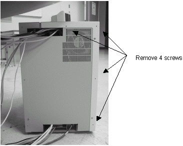
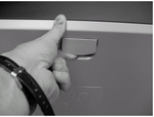
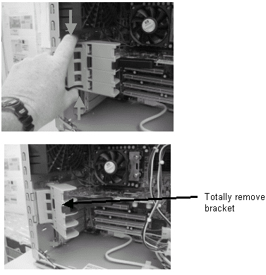
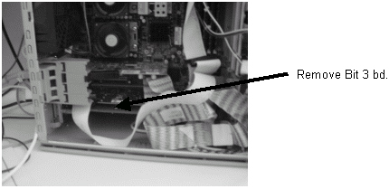

Operating Documentation
Direction 5133330-3, Rev# 14
Signa EXCITE HD 3.0T Service Methods
Module Version 1.0, Version Date 5/3/07
Operating Documentation |
| Required Persons | Preliminary Reqs | Procedure | Finalization |
|---|---|---|---|
| 1 |
Properly power down the computer.
Remove the four screws in the rear that secure the left side panel. See Illustration 1.
Illustration 1: Screws to Remove

Remove the left side panel by sliding it back.
Remove the left panel of the PC by lifting up on the latch.
Illustration 2: Removing the Left Panel

Remove the circuit board securing bracket by pinching bracket.
Illustration 3: Removing the Circuit Board

Remove the Bit 3 Board.
Illustration 4: Removing the Bit 3 Board

Install the replacement bit 3 board
Install the replacement hard drive by reversing the preceding steps.
No finalization steps.